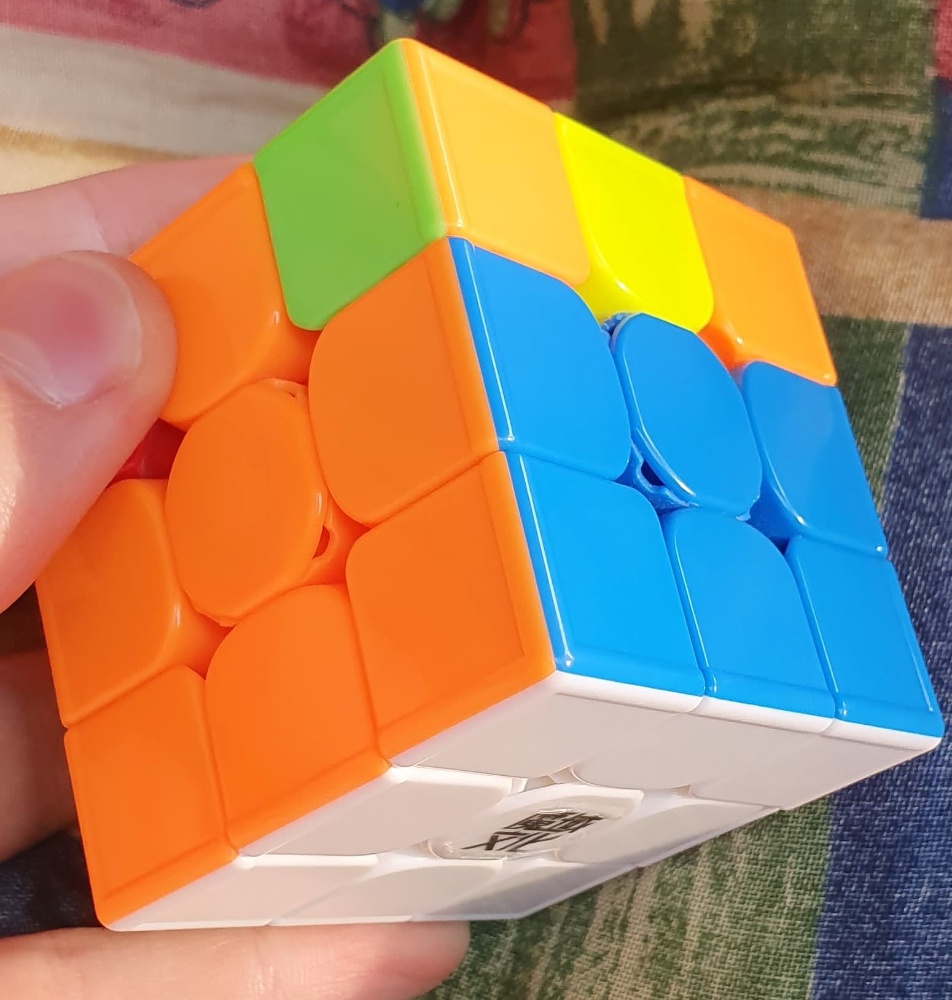
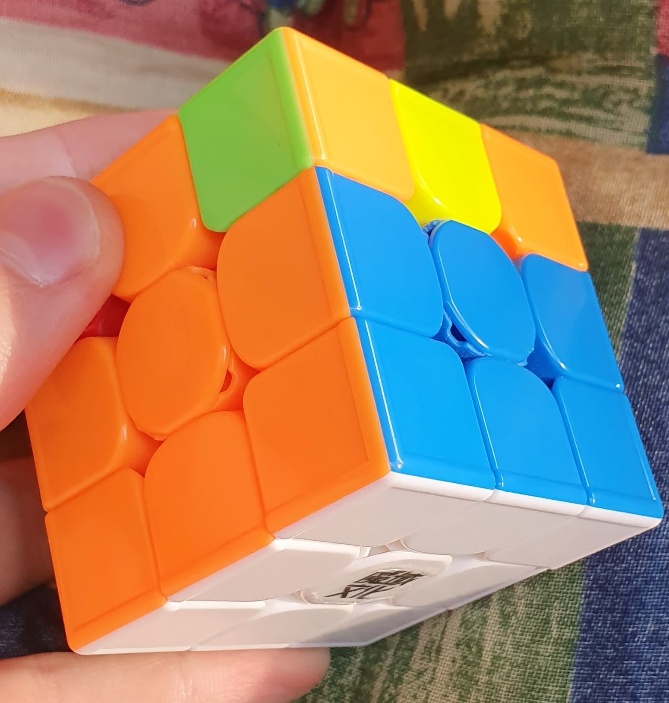

- liczba wszystkich możliwych kombinacji
wynosi ponad 43 tryliony, co liczymy
tak: 8! * 3^7 * (12!/2) * 2^11 - gdyby zebrać tyle Kostek Rubika, by każda
z nich miała inny układ swoich
26 klocków i ustawić je jedna na
drugiej, taka wieża
miałaby wysokość ponad 246 lat świetlnych.
Dla porównania odległość Ziemi od Słońca
wynosi 5,75 DNIA świetlnego. - gdyby zebrać tyle kostek 3x3x3, by
każda z nich miała inny układ
i wszystkie układy były wykorzystane,
powstały zbiór ważyłby
(waga 1 kostki to 115g)
5 biliardów ton
43 252 003 274 489 856 000

W metodzie podstawowej układamy pierwszą warstwę, czyli pierwszą ściankę, która nie tylko jest
biała, ale i (tak jak krzyż) zgodna z sąsiadującymi ściankami.

W metodzie podstawowej po ułożeniu pierwszej warstwy układamy drugą. W tym etapie musimy
umieścić 4 krawędzie na odpowiednich miejscach i zadbać aby były dobrze zorientowane.
Używamy do tego 2 algorytmów. Pokaż algorytmy
Dowiedz się więcej o algorytmach i ich notacji  W bardziej zaawansowanej matodzie (Fredrich, inaczej CFOP) układamy obie warstwy symultanicznie.
Dowiedz się więcej o algorytmach i ich notacji  W bardziej zaawansowanej matodzie (Fredrich, inaczej CFOP) układamy obie warstwy symultanicznie.

Sposób pierwszy: Układmy krzyż na górnej ściance. Gdy mamy kropkę robimy algorytm:
F (R U R' U') F'. Mamy wtedy kształt "L". Trzymamy kostkę tak aby był on mniej więcej tak jak "L" obrócone w pionie i wykonujemy ten sam algorytm. Na końcy mamy "minus". Trzymamy by był zwykłą, poziomą kreską i wykonujemy ten sam algorytm.
Obracamy kostkę kolorem żółtym do dołu i wykonujemy tzw. sexy move (R U R' U').Obraca do prawą dolną krawędź. Gdy pierwsza jest obrócona (trzeba wykonać dwa, cztery takie ruchy lub poprostu pominąć dany narożnik) robimy ruch D (lub D'), czyli ruch dolną ścianką. Powtarzać dopóki, dopóty wszystkie narożniki nie będą obrócone. Spośób ten jest najwolniejszy.
Sposób drugi, tzw. 2-look OLL: Układamy krzyż na górnej ściance (opisane wyżej) i wykonujemy jeden z 7 algorytmów, który obróci wszystkie narożniki. Sposób ten jest zdecydowanie szybszy od pierwszego, ale nie tak szybki jak ostatni sposób
Sposób trzeci, tzw. full OLL: Od razu po ukończeniu F2L'a wykonujemy jeden z 57 algorytmów, który bez potrzeby układania krzyża obróci zarówno krawędzie, jak i narożniki. Jest to najszybszy sposób, który jednak wymaga dużej ilości nauki.